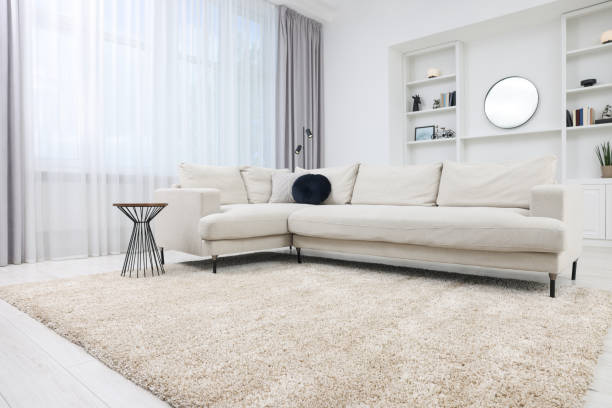

Garfield New Jersey
info@topcarpetflooring.pro
Garfield New Jersey
info@topcarpetflooring.pro

Discover top-quality carpet and flooring solutions in Garfield New Jersey . Our expert installation, diverse options, and competitive pricing will transform your home’s look and feel.
Click Here To Call Us (877) 848-1711When it comes to enhancing the comfort, aesthetic appeal, and functionality of your home or office, choosing the right flooring is essential. At , we are the leading carpet and flooring experts in Garfield New Jersey . Our extensive experience and commitment to quality make us the go-to choice for homeowners and businesses alike.
We offer a wide range of flooring options, from plush carpets to durable hardwood, elegant tiles, and eco-friendly vinyl. Whether you’re looking to upgrade your existing floors or install new flooring from scratch, we provide top-notch products that fit your style, budget, and needs. Our professional installation services ensure that your floors are laid with precision and care, giving you a flawless result that lasts for years to come.
Why choose us? We pride ourselves on delivering exceptional service in Garfield New Jersey backed by years of expertise in the flooring industry. We prioritize customer satisfaction and always go the extra mile to ensure you get the best flooring solutions tailored to your preferences. Our team will guide you through the entire process, from selection to installation, ensuring a smooth and stress-free experience.
If you’re ready to transform your space with high-quality carpet and flooring in Garfield New Jersey contact us today for a free consultation and estimate. Let us help you find the perfect flooring solution that will elevate your home or office.
Residential & commercial Carpet and Flooring
Quality services at affordable prices
Immediate 24/ 7 emergency services


At Premium Carpet and Flooring Services, we are committed to transforming your home or business with high-quality flooring solutions. Serving the vibrant city of Garfield New Jersey we provide an extensive range of flooring options, from luxurious carpets to durable hardwood, laminate, and tile floors. Our expert team ensures that every installation is completed to perfection, offering seamless, professional results that enhance your space.
Whether you’re remodeling a single room or upgrading your entire property, our flooring specialists in Garfield New Jersey guide you through every step of the process. We offer a wide variety of flooring styles and materials that suit all tastes and budgets. Our premium carpets provide comfort and elegance, while our range of hardwood and laminate flooring options brings a touch of sophistication and durability to your home or office.
Why choose Premium Carpet and Flooring Services? We pride ourselves on delivering exceptional customer service, fast turnaround times, and expert craftsmanship. Each of our flooring projects is backed by our satisfaction guarantee. We are committed to meeting your unique needs, providing you with flooring that not only looks stunning but also stands the test of time. Let us elevate your home or business in Garfield New Jersey with our premium flooring solutions.
Contact us today to schedule your free consultation and discover why we’re the trusted flooring experts in Garfield New Jersey .
Residential & commercial Carpet and Flooring
Quality services at affordable prices
Immediate 24/ 7 emergency services
When searching for “flooring contractors near me” you want reliable and skilled professionals. Our team of experienced flooring contractors is dedicated to delivering exceptional quality and service across all aspects of flooring installation and maintenance.
What sets us apart? Our commitment to professionalism, timely service, and high-quality work means that you can trust us to handle all your flooring needs with integrity. We discuss every step of the process with you, ensuring your vision comes to life seamlessly. Choose our qualified contractors for a stress-free and rewarding flooring experience.

Laminate flooring is an excellent choice for those seeking a beautiful yet budget-friendly flooring option. With advancements in technology, laminate can now convincingly mimic the appearance of hardwood, stone, or tile while offering practicality and durability. Our laminate flooring installation services are designed to give your home a fresh new look without the hefty price tag.
Why Choose Us for Laminate Flooring Installation?
1. **Stylish Choices**: We carry a diverse range of laminate styles and finishes, allowing homeowners to find the perfect design for their space.
2. **Durability**: Laminate flooring is designed to withstand scratches, dents, and fading, making it ideal for high-traffic areas.
3. **Quick Installation**: Our experienced installers work efficiently to minimize disruption and provide a seamless flooring experience.
4. **Easy Maintenance**: With its resistance to stains and moisture, laminate flooring is easy to clean, making it a practical option for busy households.
Enhance your home’s beauty and functionality with laminate flooring installed by our skilled team .

When looking for local carpet and flooring companies, it’s crucial to find a reliable, reputable partner that understands your needs. Our company has become a trusted name among local carpet and flooring businesses . We pride ourselves on offering a personal touch along with professional services that ensure a seamless flooring experience.
Why Choose Us as Your Local Carpet and Flooring Company?
1. **Community Focus**: As a local company, we are deeply invested in serving our community, ensuring personalized service at every level of interaction.
2. **Wide Selection**: We offer a comprehensive range of carpets and flooring options, suitable for any style and budget.
3. **Experienced Staff**: Our knowledgeable team is dedicated to helping you find the right solution, from the selection process to installation.
4. **Ongoing Support**: We believe in building lasting relationships with our clients, providing continuous support even after your floors are installed.
Experience the difference with our dedicated local carpet and flooring company .

Supporting local businesses is essential, and our company has been serving the Garfield New Jersey community with pride. As one of the leading local carpet and flooring companies, we are dedicated to providing exceptional service and high-quality products tailored to our clients’ needs.
Choosing a local company means personalized service and expertise that larger chains cannot provide. Our knowledgeable staff will work closely with you to understand your requirements and help you find the perfect flooring option, whether for a residential or commercial project. With deep roots in the community, we are committed to maintaining our reputation by delivering outstanding results at competitive prices.

The right flooring can significantly impact the look and feel of your office space. Our office flooring installation services in Garfield New Jersey cater to businesses looking for stylish yet practical flooring solutions. From plush carpets for comfort to durable vinyl for high-traffic areas, we have the products and expertise to enhance your office.
Why Choose Us for Office Flooring Installation?
1. **Tailored Business Solutions**: We understand that every office has unique needs. Our team will work with you to select the best flooring options for your specific environment.
2. **Quality Products**: We offer a range of flooring materials designed specifically for commercial use, ensuring long-lasting durability.
3. **Minimal Disruption**: Our installation team is skilled at completing projects promptly, minimizing disruption to your daily operations.
4. **Exceptional Customer Service**: We pride ourselves on our responsive and attentive customer service, guiding you through the process from selection to installation.
Improve your office environment with our professional flooring installation services. Get in touch for customized office flooring solutions in Garfield New Jersey .
An office space requires flooring that matches its professional environment and is durable enough to handle frequent foot traffic. Our office flooring installation services in Garfield New Jersey cater to businesses looking for stylish and functional options.
We offer a variety of flooring solutions, from carpets to tiles and vinyl, tailored to meet the demands of any workplace. Our skilled team understands the importance of minimizing disruptions during installation, so we work quickly and efficiently while maintaining the highest quality standards. Enhance your office environment with our flooring solutions, designed to impress clients and support staff productivity.

Our professional carpet installation service in Garfield New Jersey guarantees exceptional craftsmanship paired with an array of elegant carpet choices. We take the time to understand your style, budget, and needs to help you find the perfect carpet that enhances your space, whether it’s for residential or commercial use.
Our trained installation experts ensure a seamless fit, taking care of every detail so that your new carpet will look fantastic and withstand daily use. With our commitment to quality and customer satisfaction, we stand out as the preferred choice for professional carpet installation in Garfield New Jersey .

Upgrading your floors can be a daunting task, but our carpet removal and installation services make the process straightforward and stress-free. If it's time for a new look, our team will efficiently remove your existing carpet and prepare your space for fresh installation.
We handle everything from the removal process to the careful installation of your new carpeting, ensuring that all areas are clean and ready for use after the job is completed. Our friendly and experienced crew prides themselves on maintaining a high level of professionalism and respect for your home. Count on us for hassle-free carpet removal and installation that transforms your space beautifully.
Years Experience
Expert Technicians
Satisfied Clients
Compleate Projects
At Top Carpet Flooring, we’re committed to delivering unmatched quality and service across all cities in Garfield New Jersey . With years of experience, we understand the art of transforming your spaces with the perfect flooring solutions. Whether you're revamping a cozy home or upgrading a commercial space, we have you covered.
Our vast selection of premium carpets and flooring options ensures you’ll find something to match your style, budget, and needs. From plush carpets for living rooms to durable vinyl and hardwood floors for high-traffic areas, we offer solutions that combine elegance and practicality.
What sets us apart? Our professional team takes the time to understand your unique requirements, offering personalized recommendations to suit your preferences. We pride ourselves on using only top-quality materials, ensuring long-lasting results that add value to your property.
At Top Carpet Flooring, customer satisfaction is our priority. From the initial consultation to the final installation, we guarantee a seamless and hassle-free experience. Our trained installers work with precision and care, leaving your space looking flawless.
Serving all cities in Garfield New Jersey we’re proud to be the trusted name for reliable, affordable, and beautiful flooring solutions. Join countless satisfied customers who’ve chosen us for our expertise, dedication, and exceptional craftsmanship.
Contact Top Carpet Flooring today to schedule a consultation and discover how we can transform your space with flooring that’s both stunning and functional. Your dream floors are just a call away!
When searching for carpet and flooring near me in Garfield New Jersey look no further than our expert team. We specialize in providing outstanding carpet and flooring services that meet the unique needs of each customer. With years of experience serving residential and commercial clients, we understand the importance of quality materials and impeccable installation.
Our knowledgeable staff will guide you through every step of the process, ensuring you find the perfect flooring solution that fits your style, budget, and requirements. We offer a wide selection of carpets, vinyl, hardwood, and eco-friendly options, making us your go-to choice for all flooring needs. Our commitment to excellence sets us apart in the competitive flooring market, making your decision to choose us an easy one.
Your home is your sanctuary, and the right flooring can make all the difference. Our residential carpet installation services are designed to elevate the comfort and aesthetics of your living space. We understand that every home is unique, and we offer a wide variety of carpet choices, including plush, Berber, and looped styles, from leading brands that guarantee durability and comfort.
Choosing us for your installation means opting for quality and reliability. Our installation team consists of skilled professionals who take every measure to ensure a flawless and timely installation. We use advanced techniques and tools to minimize disruption and leave your home spotless. Additionally, our carpets come with warranty options that provide peace of mind for years to come. Enjoy the transformation of your home with our exceptional carpet installation services.
In today's fast-paced business world, having a professional and inviting commercial space is paramount. Our commercial flooring services are designed for businesses of all sizes, whether you're looking to revamp an office, retail space, or industrial site.
We specialize in a variety of commercial flooring options, including vinyl, carpets, tiles, and hardwood that are not only aesthetically pleasing but also durable and easy to maintain. Our skilled team understands the unique demands of commercial environments and assures a quick, efficient installation that minimizes downtime. By choosing our services, you can trust that you're enhancing your business's image with long-lasting flooring solutions that will impress your clients and staff alike.
Finding affordable carpet and flooring options doesn't mean you have to compromise on quality. Our mission is to provide high-quality flooring solutions that fit every budget. We believe that everyone deserves beautiful floors in their home or office, so we’ve partnered with reputable manufacturers to offer a wide range of value-oriented products without sacrificing durability and style. Our affordable options include plush carpets, stylish laminate flooring, and luxury vinyl planks, all competitively priced to suit your financial needs. Our sales consultants are ready to assist you in finding the best deals and options that align with your style, ensuring you get the best value for your investment.
When searching for the best carpet and flooring companies look no further! Our company stands out for our commitment to quality, exceptional customer service, and a proven track record of satisfied clients. With years of experience in the flooring industry, we have built a reputation for excellence. Our team of experts is dedicated to understanding your needs and providing personalized solutions that exceed your expectations. We offer a comprehensive selection of flooring materials, styles, and colors, ensuring that you find exactly what you're looking for. Plus, our competitive pricing and guarantee of quality workmanship make us the best choice for all your carpet and flooring needs.
Personalization is key when it comes to flooring. Our custom flooring installation service allows you to create a unique space that reflects your style and functionality needs. We offer a variety of materials, colors, and textures, empowering you to bring your vision to life.
Our design consultants are here to assist you throughout the selection process, providing expert advice on trends and styles that best suit your space. Once you've made your selection, our expert installation team ensures that every detail is handled with precision and care, transforming your home into a reflection of your personal taste. Choose our custom flooring installation to stand out from the crowd with a tailor-made solution that perfectly fits your lifestyle.
Nothing compares to the timeless elegance of hardwood flooring. Our hardwood flooring installation service is designed to provide you with a premium experience from selection to installation. With a wide variety of wood species, colors, and finishes available, we help you choose the perfect hardwood options that match your home décor and lifestyle. Our licensed and experienced installers ensure that each plank is meticulously laid for a flawless finish, increasing your home's value while providing warmth and sophistication. We also offer maintenance tips to keep your hardwood floors looking pristine for years to come. Trust us to bring the beauty of hardwood into your space!
Our carpet installation services in Garfield New Jersey are designed to provide a seamless experience from consultation to completion. With a large variety of carpet styles, colors, and textures available, you'll find the perfect match for your home or business.
We pride ourselves on professionalism, ensuring that every installation is done to the highest standards. Our experienced team evaluates each space to recommend the best carpet options based on traffic, style, and function. The care we take in our installation process guarantees a phenomenal result, and our long-standing reputation speaks to our commitment to customer satisfaction.
Keeping your floors in top condition is key to maintaining the overall appearance of your home or business. Our flooring repair services in Garfield New Jersey address any damage, wear and tear, or aesthetic concerns you may have with your current flooring.
Whether it's a minor scratch in hardwood, a stubborn stain in carpet, or a loose tile, we have the expertise to restore your flooring to its original glory. Our knowledgeable technicians will assess the damage and suggest the most effective repair solutions, ensuring minimal disruption to your daily life. Choose us for your flooring repairs, and enjoy a beautiful, well-maintained space year-round.
Vinyl flooring has become an increasingly popular choice for homeowners and businesses alike, thanks to its versatility and durability. Our vinyl flooring installation services in Garfield New Jersey cater to those seeking a stylish and practical flooring solution. With a wide range of colors, patterns, and textures available, you can achieve the look of hardwood, stone, or tile without significant costs. Our skilled installers ensure that your vinyl flooring is laid correctly, providing a smooth and professional finish that enhances the beauty of your space. Additionally, vinyl's waterproof nature makes it ideal for areas prone to moisture, such as kitchens and bathrooms. Experience the ease of maintenance and beauty with our expert vinyl flooring installation.
When searching for a carpet and flooring store near me, our store in Garfield New Jersey stands out for its exceptional range of products and customer service. We are more than just a flooring store; we are your partners in creating beautiful spaces. Our well-curated selection includes everything from plush carpets to durable hardwood, luxury vinyl, and more. We understand that shopping for flooring can be overwhelming, so our experienced team is here to assist you in making informed decisions tailored to your specific needs, style, and budget. Plus, we offer competitive pricing and exclusive deals to ensure you get the best value. Visit us today and see why we’re the preferred flooring destination in Garfield New Jersey .
Luxury vinyl plank (LVP) flooring is transforming how people think about flooring. With a realistic look and feel, LVP is an excellent alternative to hardwood that offers incredible durability and easy maintenance. Our luxury vinyl plank flooring services will elevate your space, giving you the beauty of wood without the downsides.
Our LVP options come in a range of styles, colors, and textures to suit any taste. Plus, our experienced installers ensure a high-quality application, so you can enjoy your stunning new flooring without worry. As a leading choice for luxury vinyl flooring we are committed to providing high-quality products and expert installation that you can depend on.
Flooring replacement can revitalize your home, giving it a fresh new look while improving functionality. If your current flooring is showing signs of age, it might be time to consider flooring replacement services. Our team specializes in removing old flooring and providing high-quality replacements that meet your lifestyle and aesthetic preferences.
Why Choose Us for Flooring Replacement?
1. **Comprehensive Assessment**: We start by evaluating your existing flooring and understanding your vision for the replacement, allowing us to suggest the best options for your needs.
2. **Quality Products**: We offer a wide range of flooring materials, from carpets to hardwood and vinyl, ensuring you find something that suits your style and budget.
3. **Expert Installation**: Our experienced installation team ensures that your new flooring is installed correctly and efficiently, minimizing disruption to your daily life.
4. **Post-Installation Services**: We provide ongoing support and maintenance tips to help you keep your new flooring looking great for years to come.
Refreshing your space has never been easier. Choose our reliable flooring replacement services for a hassle-free experience.
If your floors are showing signs of wear and tear or simply aren’t meeting your needs anymore, our flooring replacement services are here to help. We work closely with our clients to determine the best options for replacement, catering to styles, budgets, and functionality.
Our team will guide you through the selection process, where you'll discover an array of flooring materials, including carpet, hardwood, laminate, and vinyl. Upon choosing your new flooring, our professional installers will ensure the project is handled efficiently and effectively, leaving you with a refreshed space that you can feel proud of.
Choosing eco-friendly flooring options is an important decision for environmentally-conscious consumers, and our services provide sustainable solutions without compromising on style or quality. We offer a variety of green flooring materials, including bamboo, cork, and recycled content carpets, ensuring that you can enhance your space while caring for the planet. Our knowledgeable staff will guide you in choosing the right sustainable materials for your home or business, emphasizing the environmental benefits alongside aesthetic appeal. With our expert installation team, your eco-friendly flooring will not only look great but also contribute positively to healthier indoor air quality and a sustainable future.
The combination of carpet and hardwood installation allows you to enjoy the best of both worlds—comfort and elegance. As flooring specialists, we can help you achieve a stunning design that incorporates both materials strategically throughout your space.
Our team will work with you to understand your vision, recommend the best locations for carpet and hardwood, and then handle the installation professionally. With our attention to detail and commitment to quality, we ensure a beautiful, harmonious look that adds value to your home. Mixing and matching these materials has never been easier and more attractive than with our expertly executed carpet and hardwood installation.
Waterproof flooring is an essential choice for areas prone to moisture, and our waterproof flooring installation services are designed to protect your investment. Whether you are looking to install waterproof laminate, vinyl, or tile, we have the perfect solution for your needs. Our team helps you navigate through various options that offer both style and functionality while ensuring your flooring can withstand spills, humidity, or any wet environment without compromising its integrity. With our professional installation, you can have peace of mind knowing your waterproof flooring is laid correctly for maximum protection and durability, making it an ideal choice for kitchens, bathrooms, basements, and high-traffic areas.
Looking to enhance the beauty and comfort of your home or business? Our expert carpet installation and flooring solutions in Garfield New Jersey provide the perfect upgrade to any space. Whether you're renovating your living room, office, or entire property, our high-quality flooring options are designed to meet your needs and exceed your expectations.
At Carpet and Flooring, we offer a wide variety of flooring choices, including plush carpets, elegant hardwood, durable laminate, and modern tile. Our professional team ensures a seamless installation process, delivering precise craftsmanship and attention to detail. With years of experience in the industry, we understand the unique needs of Garfield New Jersey residents and businesses, providing customized solutions that perfectly complement your space and lifestyle.
Our team uses the latest techniques and premium materials to guarantee long-lasting results, whether you're upgrading for comfort, style, or practicality. We prioritize your satisfaction, ensuring timely installations with minimal disruption to your routine.
Ready to transform your space with exceptional carpet installation and flooring services in Garfield New Jersey ? Contact us today for a free consultation and let our experts guide you in choosing the best flooring solution for your property. Experience the difference of professional flooring services that elevate your space and add lasting value.
Garfield is a city in Bergen County in the U.S. state of New Jersey. As of the 2020 United States census, the city's population was 32,655, an increase of 2,168 (+7.1%) from the 2010 census count of 30,487, which in turn reflected an increase of 701 (+2.4%) from the 29,786 counted in the 2000 census.
Regular sweeping, gentle cleaning solutions, and avoiding excess water help maintain hardwood floors from Top Carpet Flooring .
Yes, Top Carpet Flooring offers professional carpet installation services ensuring a flawless fit for your home or business.
At Top Carpet Flooring, we offer a wide variety of options, including plush carpets, hardwood, laminate, vinyl, and tile flooring, ensuring the perfect match for your style and needs in Garfield New Jersey .
Yes, we prioritize safety and offer low-VOC and hypoallergenic flooring options for families in Garfield New Jersey .
Yes, our team at Top Carpet Flooring specializes in carpet repairs to restore your flooring's beauty and functionality .
With proper care, hardwood flooring from Top Carpet Flooring can last for decades, adding beauty and value to your Garfield New Jersey home.
Our design experts at Top Carpet Flooring can help you choose flooring that complements your home’s decor .
Pet-friendly options like laminate and waterproof vinyl are ideal, and Top Carpet Flooring offers a variety of these durable choices in Garfield New Jersey .
Durable options like vinyl, tile, and engineered hardwood are ideal for high-traffic areas, and we provide these at Top Carpet Flooring .
Vinyl flooring is an excellent choice for kitchens as it is water-resistant, durable, and easy to maintain.
Yes, Top Carpet Flooring is experienced in installing flooring in multi-story homes across Garfield New Jersey .
Yes, you can easily schedule a consultation with our team at Top Carpet Flooring to discuss your project.
Yes, Top Carpet Flooring provides commercial flooring solutions tailored to businesses of all sizes in Garfield New Jersey .
Same-day installation may be available depending on the project size and material; contact Top Carpet Flooring for details.
The installation time depends on the project's size and complexity, but our team at Top Carpet Flooring ensures timely and efficient service in Garfield New Jersey .
Yes, we offer removal services to prepare your space for new flooring in Garfield New Jersey .
Yes, Top Carpet Flooring provides warranties on many of our flooring products for added peace of mind .
Absolutely! Top Carpet Flooring offers a range of eco-friendly flooring options, including sustainable materials and low-VOC products .
Yes, we provide free estimates to help you plan your carpet and flooring projects with confidence.
With top-quality products, expert installation, and exceptional customer service, Top Carpet Flooring is the trusted choice .
Yes, Top Carpet Flooring specializes in stair carpet installation, enhancing safety and aesthetics in your Garfield New Jersey property.
Yes, we offer moisture-resistant flooring options like vinyl and tile, perfect for basements .
Yes, Top Carpet Flooring provides flooring samples to help you make an informed choice for your Garfield New Jersey home or office.
Yes, Top Carpet Flooring provides flexible financing options to make your dream flooring more affordable in Garfield New Jersey .
Absolutely! Top Carpet Flooring offers waterproof flooring, perfect for areas like bathrooms and basements in Garfield New Jersey .
Carpet installation costs vary based on the material and project size. Contact Top Carpet Flooring for a detailed quote.
Hardwood flooring offers durability, timeless appeal, and added home value. Top Carpet Flooring provides top-quality hardwood options .
Laminate flooring is cost-effective, durable, and available in a wide range of designs, making it a popular choice .
Regular vacuuming, professional cleaning, and immediate stain treatment are essential for maintaining your carpet from Top Carpet Flooring in Garfield New Jersey .
Our experts at Top Carpet Flooring can help you choose the perfect flooring by considering factors like durability, style, and budget.
I’ve worked with several flooring companies in Garfield New Jersey but Top Carpet Flooring stands out. Their attention to detail and commitment to quality are unmatched. My new floors look fantastic, and I’ll be returning for future projects!
Profession
Top Carpet Flooring in Garfield New Jersey delivered exactly what I needed—durable and stylish flooring for my busy household. Their laminate flooring has exceeded my expectations in both quality and design. Highly recommend their services!
Profession
Working with Top Carpet Flooring in Garfield New Jersey was a breeze. Their team was professional and responsive, and they completed my project on time. The quality of my new carpet is fantastic. I couldn’t be happier!
Profession
Garfield NJ Carpet and Flooring Pros
(877) 848-1711
info@topcarpetflooring.pro
09.00 AM - 09.00 PM
09.00 AM - 12.00 PM